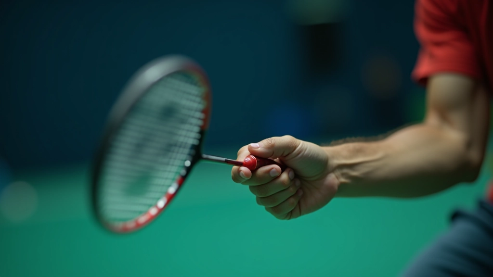
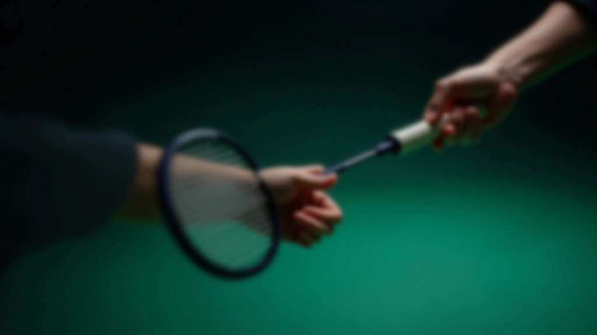
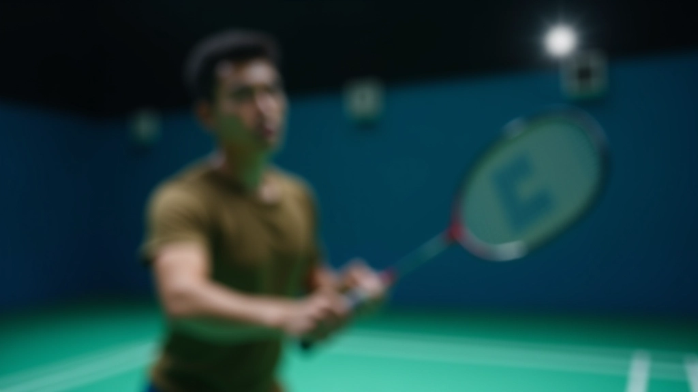

اختيار قوة الشد المناسبة لمستواك
دليل عملي يساعدك على تحديد قوة الشد المثالية بناءً على مستوى لعبك والمضرب الذي تستخدمه.

اكتشف كيفية إمساك المضرب بالطريقة الصحيحة لتحسين أدائك وتقليل الإصابات
القبضة الصحيحة بالمضرب ليست مجرد تفصيل ثانوي. إنها الأساس الذي يُبني عليه كل شيء آخر في لعبتك. إذا كانت قبضتك خاطئة، فستواجه صعوبة في التحكم بالمضرب وستشعر بإرهاق أكثر من اللازم.
الخبر الجيد؟ تحسين قبضتك لا يتطلب سوى وقت قليل من الممارسة. في هذا الدليل، سنشرح لك أنواع القبضة المختلفة وكيف تختار ما يناسبك.
القبضة الصحيحة توفر لك توازناً بين القوة والتحكم. يجب أن تشعر بالمضرب كامتداد طبيعي ليدك، وليس كأنك تقيده بقوة.
القبضة الأمامية هي الطريقة التي تمسك بها المضرب عند لعب الضربات الأمامية. تخيل أنك تصافح شخصاً ما — هذا تقريباً ما تفعله مع المضرب.
ضع يدك على المقبض بحيث تكون راحة يدك ملامسة للمقبض بشكل طبيعي. الإبهام يجب أن يكون على جانب واحد، والأصابع الأخرى تلتف حول المقبض. لا تجعلها ضيقة جداً — تذكر أنك تريد الراحة والتحكم معاً.


القبضة الخلفية ليست بعيدة جداً عن القبضة الأمامية. الفرق الأساسي؟ تدوير يدك قليلاً بحيث يصبح الإبهام في موضع مختلف. هذا يعطيك زاوية أفضل للضربات من الجانب الآخر.
عندما تنتقل من الأمام إلى الخلف، لا تحتاج إلى تغيير قبضتك بشكل جذري. ما تفعله هو إجراء تعديل صغير — الإبهام ينزلق قليلاً نحو الأسفل، والمقبض يبقى مرتاحاً في يدك. الحركة يجب أن تكون سلسة وطبيعية، ليست مجهدة.
في الواقع، معظم اللاعبين المحترفين يستخدمون قبضة وسيطة تجمع بين الأمامية والخلفية. هذا يسمح لهم بالتنقل بسرعة دون الحاجة إلى تغيير جذري في كل مرة.
تشديد القبضة بقوة يسبب إرهاق الذراع والمعصم. تذكر — أنت تمسك مضرباً، ليس تسلق جبل! القبضة المريحة تعطيك تحكماً أفضل.
الإبهام يجب أن يدعم المقبض من الخلف، ليس ملتفاً حول الأمام. الموضع الخاطئ يقلل من قوتك ويجعل المضرب يشعر بعدم الاستقرار.
إذا ظللت تشد قبضتك طوال الوقت، ستتعب بسرعة. أرخِ قليلاً بين الضربات، ثم شد قليلاً عند لحظة الاتصال بالكرة.
تحسين قبضتك يتطلب ممارسة منتظمة، لكنه ليس معقداً. خذ مضربك وأنت تجلس — ليس لديك حاجة للكرة في البداية. ركز فقط على كيفية إمساك المضرب بشعور طبيعي.
جرب التبديل بين القبضة الأمامية والخلفية عشر مرات ببطء. اشعر بكيف تتحرك يدك. بعد أسبوع أو أسبوعين من القيام بهذا، ستصبح حركات القبضة تلقائية. عندها يمكنك البدء في استخدامها أثناء اللعب الفعلي.

شريط التمسك على المقبض يساعدك على الإمساك بشكل أفضل، خاصة إذا كانت يدك رطبة. تأكد من أنه نظيف وفي حالة جيدة.
لا تقلق بشأن كل التفاصيل الدقيقة. ركز على الشعور — هل المضرب مريح؟ هل تستطيع التحكم به بسهولة؟ إذا كانت الإجابة نعم، فأنت على الطريق الصحيح.
إذا أمكنك، اطلب من مدرب أو لاعب ذي خبرة أن ينظر إلى قبضتك. العيون الخارجية تلاحظ أشياء قد لا تشعر بها بنفسك.
بعد أن تشعر بالراحة، ابدأ بضرب الكرة. ستكتشف بسرعة ما إذا كانت قبضتك تعطيك التحكم الذي تحتاجه أم لا.

كاتب المقال
فريق المحتوى التحريري
أعده فريق ريشة الاحتراف التحريري، متخصص في تقديم إرشادات عملية وسهلة المتابعة.
القبضة الصحيحة ليست معقدة، لكنها مهمة جداً. قد لا تلاحظ الفرق في يومك الأول، لكن بعد أسابيع قليلة من الممارسة، ستشعر بتحسن حقيقي في تحكمك وراحتك. ستلعب أطول فترة دون إرهاق، وستلاحظ أن ضرباتك أقوى وأكثر دقة.
تذكر — كل لاعب احترافي بدأ من حيث بدأت أنت الآن. الفرق هو أنهم استثمروا الوقت في تعلم الأساسيات بشكل صحيح. أنت الآن تفعل الشيء نفسه. استمر في الممارسة، وسترى النتائج.
هذا المقال يقدم معلومات تعليمية عن تقنيات القبضة الصحيحة. النصائح هنا مبنية على ممارسات شائعة في الريشة الطائرة. إذا كنت تعاني من ألم أو إصابة، نوصيك بطلب نصيحة متخصص أو مدرب معتمد قبل محاولة تطبيق أي من هذه التقنيات.
دليل عملي يساعدك على تحديد قوة الشد المثالية بناءً على مستوى لعبك والمضرب الذي تستخدمه.

نصائح عملية لفحص أوتار مضربك والعناية بها. تعرّف على الأدوات البسيطة التي تحتاجها للصيانة الأساسية.

فهم العلاقة بين شد الأوتار والقبضة الصحيحة وأثرهما على قوة الضربة والتحكم. اكتشف كيف يؤثران على أسلوب لعبك.